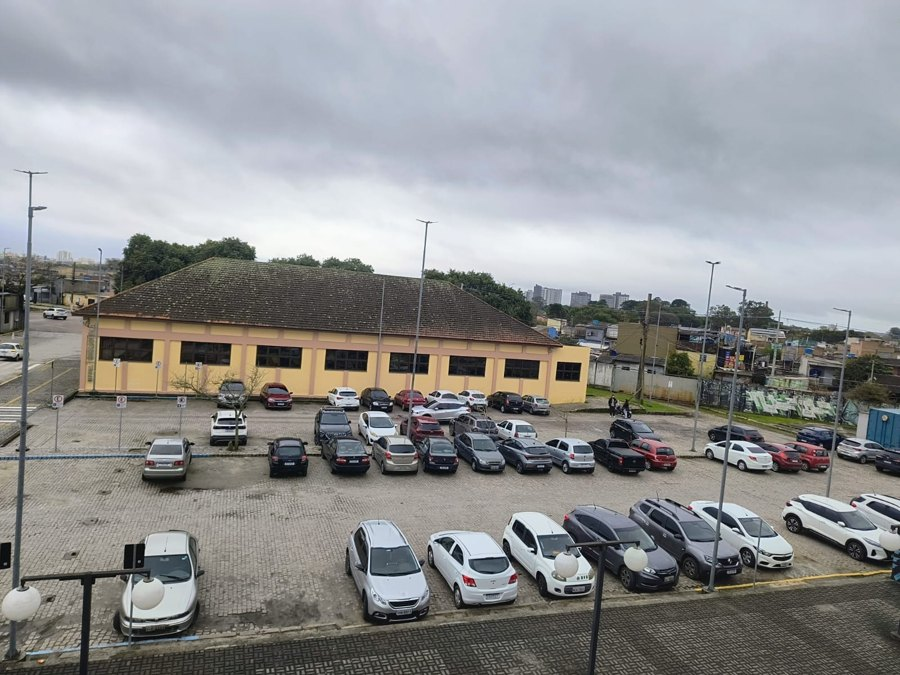
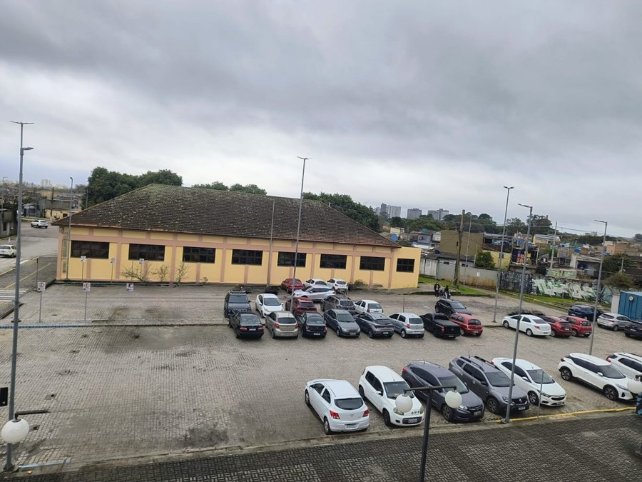
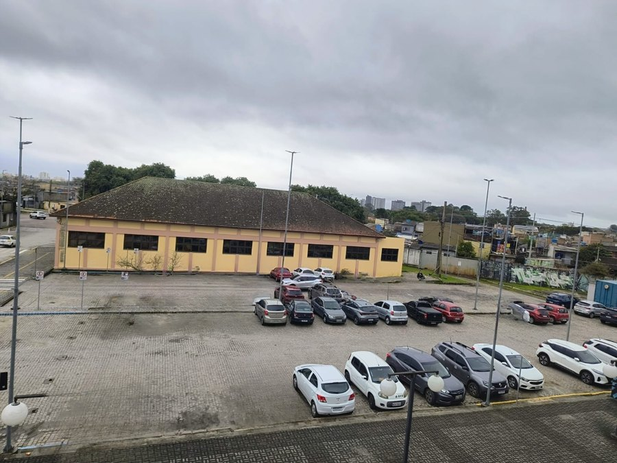
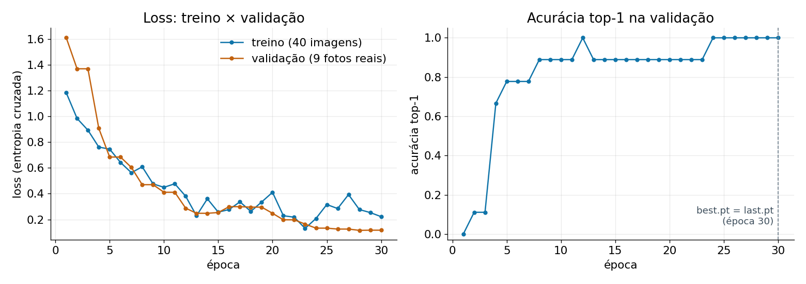
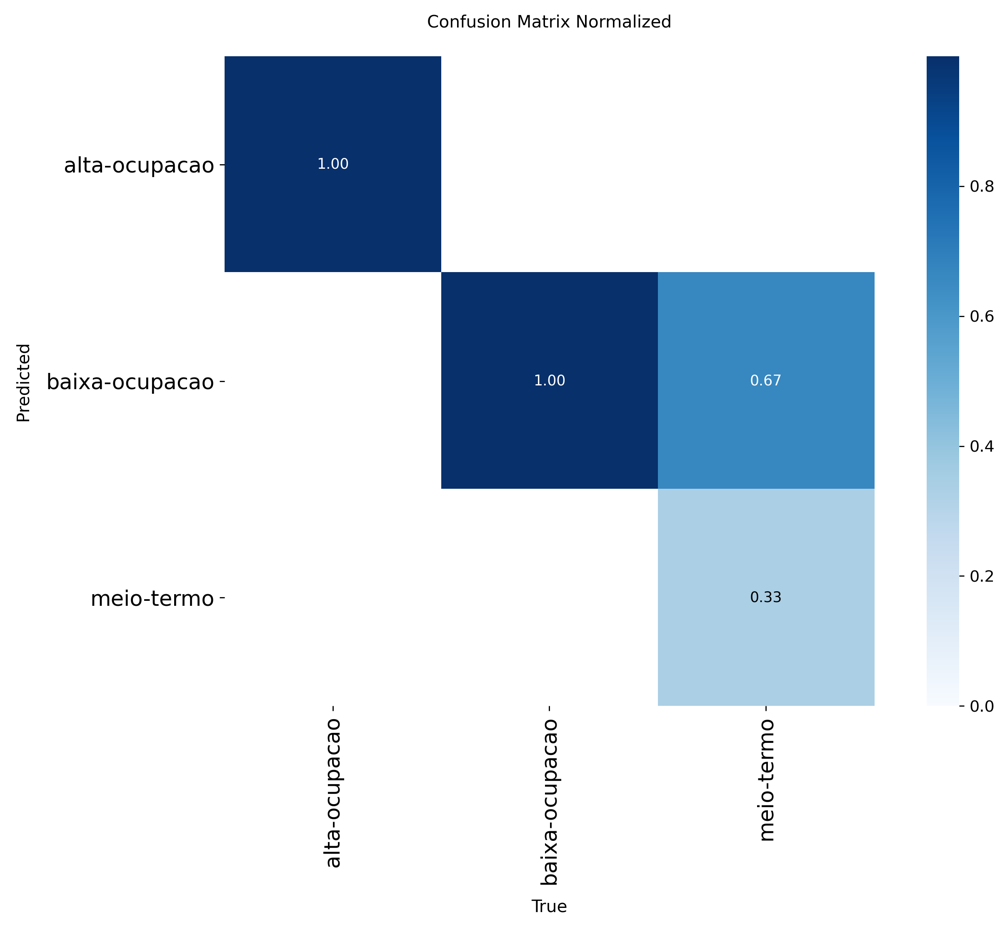
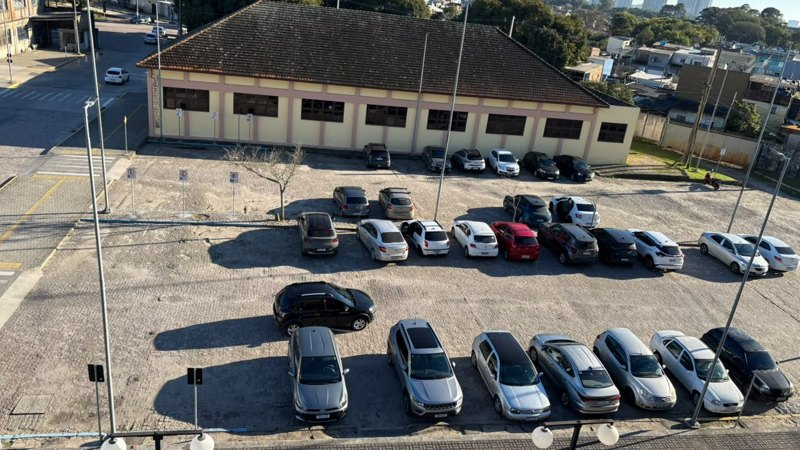
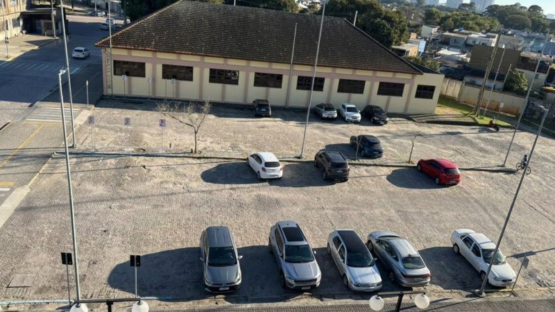
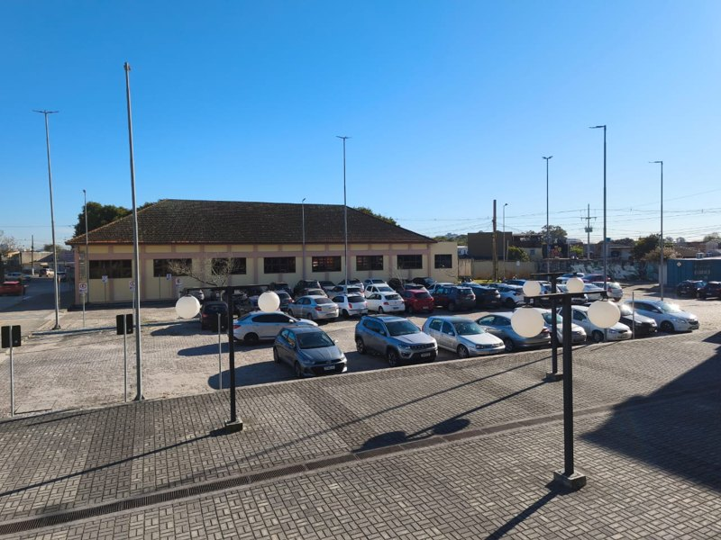

| Classe | Antes (reais) | Reais | Sintéticas | Final |
|---|---|---|---|---|
| alta-ocupação | 15 | 24 | 0 | 24 |
| meio-termo | 11 | 12 | 10 | 22 |
| baixa-ocupação | 2 | 1 | 26 | 27 |
| Total | 28 | 37 | 36 | 73 |
Nas nossas coletas o pátio quase nunca estava vazio. Existe uma única foto real de baixa ocupação. Sem dados sintéticos, a classe nem existiria no treino.



| Classe | Treino | Validação | Teste | Total |
|---|---|---|---|---|
| alta-ocupação | 12 | 6 | 6 | 24 |
| meio-termo | 10 (6 reais) | 3 | 3 | 16 |
| baixa-ocupação | 18 (0 reais) | 0 | 1 | 19 |
| Total | 40 (68%) | 9 (15%) | 10 (17%) | 59 |
Só fotos reais em validação e teste (25% das 37 fotos em cada). As sintéticas só entram no treino; 14 de inpainting ficaram de fora porque a foto de origem está na validação ou no teste.
No treino, sim (12 / 10 / 18). No teste, não: 6 de alta, 3 de meio e 1 de baixa, que vira 0% ou 100% de recall com um único acerto.
Alta e meio são o mesmo pátio com poucos carros de diferença, e os limites de 25 e 36 carros são arbitrários. Oclusão e carros pequenos ao fundo dificultam até a contagem humana.
Fotos tiradas com menos de 20 s de diferença mostram os mesmos carros. Elas formam um grupo (18 grupos nas 37 fotos) e o grupo inteiro vai para o mesmo conjunto.
Cada imagem de inpainting é uma foto real com carros apagados. Ela só entra no treino se a foto original também estiver no treino. Se a original está no teste, o modelo já teria visto aquela cena: por isso 14 imagens de inpainting foram descartadas.
O nome das 11 imagens de IA não diz de qual foto elas vieram. Comparamos o fundo (prédio, postes, guarda-corpo) com cada foto real para achar a original. 4 delas vieram de fotos que não estão no treino: 2 da validação e 2 do teste.
Pela regra do card de cima, essas 4 deveriam sair. Mas elas eram a nossa principal fonte de exemplos de baixa ocupação. Por isso ficaram, e mostramos o resultado do teste com e sem as 2 fotos afetadas (08.06.39 e 12.34.44).
split.py sorteava imagem por imagem
e caía exatamente nesse problema.model yolo26n-cls.pt # menor modelo, já pré-treinado epochs 30 # passadas pelo treino imgsz 224 # tamanho da imagem (px) batch 8 # imagens por passo seed 0 # sorteios fixos: repetível patience 30 # sem parada antecipada fliplr 0.0 # não espelha as fotos device cpu # treino levou 95 s
É a configuração do notebook da disciplina. O modelo já sabe reconhecer formas (pré-treinado no ImageNet) e só aprende as nossas 3 classes. Testamos imagens maiores, espelhamento e um modelo maior: nenhum melhorou, então mantivemos.
Com poucas fotos, uma divisão só depende de sorte. Então separamos as 27 fotos reais que não estão no teste em 5 partes e treinamos 5 vezes, cada vez avaliando numa parte diferente:
| Treino com | Acurácia média |
|---|---|
| só fotos reais | 72,8% |
| + editadas por IA | 75,3% |
| + inpainting | 75,3% |
| + IA + inpainting (escolhido) | 72,8% |
| + IA + inpainting + variantes | 75,3% |
Uma foto a mais ou a menos já muda 3,7 pontos: na prática, todas empatam. As sintéticas não pioram o modelo, e são a única forma de ele ver baixa ocupação no treino (a única foto real de baixa está no teste). Por isso usamos IA + inpainting.

best.pt (época com melhor validação) e o last.pt (última época). Como as últimas épocas empatam em 100%, ela atualiza o best.pt a cada empate: no fim, os dois são o mesmo modelo.| Pesos | Época | Top-1 validação | Top-1 teste (acertos / imagens) |
|---|---|---|---|
best.pt | 30 | 100% (9 / 9) | 80% (8 / 10) |
last.pt | 30 | 100% (9 / 9) | 80% (8 / 10) |
| Referência: sempre “alta” | — | — | 60% (6 / 10) |
| best.pt sem as 2 fotos com versão editada no treino | 30 | — | 88% (7 / 8) |
Supera a referência em 2 fotos (20 pontos). Mas com 10 imagens cada foto vale 10 pontos: o intervalo de confiança de 95% de 8/10 vai de 49% a 94%.
São a mesma época (a validação empatou em 100% até o fim), então dão o mesmo resultado. O modelo oficial continua sendo o best.pt.
| Classe | Precisão | Recall | F1 | Nº (teste) |
|---|---|---|---|---|
| alta-ocupação | 1,00 | 1,00 | 1,00 | 6 |
| meio-termo | 1,00 | 0,33 | 0,50 | 3 |
| baixa-ocupação | 0,33 | 1,00 | 0,50 | 1 |
| Média macro | 0,78 | 0,78 | F1 macro 0,67 | 10 |
Calculado a partir do previsoes_teste.csv (best.pt).
A acurácia do CSV (80%) bate com a do model.val(split="test").




Sim. Os intervalos se sobrepõem bastante: com 9 e 10 imagens, 2 fotos de diferença é o esperado só pelo sorteio.
A validação não tem nenhuma foto de baixa e tem 6 das 9 de alta (a classe mais fácil). O teste tem as fotos difíceis: 3 de meio e a única de baixa.
Aqui pesou pouco, porque todas as últimas épocas empataram em 100%. A validação saturada não consegue diferenciar épocas.
Os dois erros do teste vêm de causas identificadas (vazamento e fronteira), mas uma diferença pequena não provaria que o modelo generaliza.
Classificação da ocupação do estacionamento — Campus Anglo